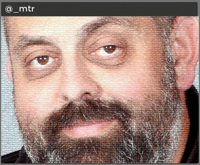

Alasdair Allan

Alasdair Allan is the author of 7 books about mobile computing, distributed sensor networks and hardware hacking and is a frequent contributor to MAKE Magazine. He recently rolled out a mesh network of 500 sensors motes during Google I/O. A couple of years ago he caused a privacy scandal by uncovering that your iPhone was recording your location all the time. He holds a Ph.D. in Astrophysics, built a distributed peer-to-peer network of research-class telescopes, and contributed to the detection of the most distant object yet discovered.
Marshall T. Rose
Marshall T. Rose is a network protocol and software engineer, author and speaker who has contributed 69 Requests for Comments to the Internet Engineering Task Force (IETF). Among the protocols he has contributed to are the Simple Network Management Protocol (SNMP), the Extended Simple Mail Transfer Protocol (ESMTP), the Blocks Extensible Exchange Protocol (BEEP), The Phone Company (TPC.Int), and the Extensible Messaging and Presence Protocol (XMPP, aka "Jabber"). Rose maintained MH, one of the first mail clients, and was a pioneer in e-commerce when he co-founded First Virtual in 1994. The author of 8 books, he holds a Ph.D. in Information and Computer Science from the University of California, Irvine and is former area director for network management of the IETF.